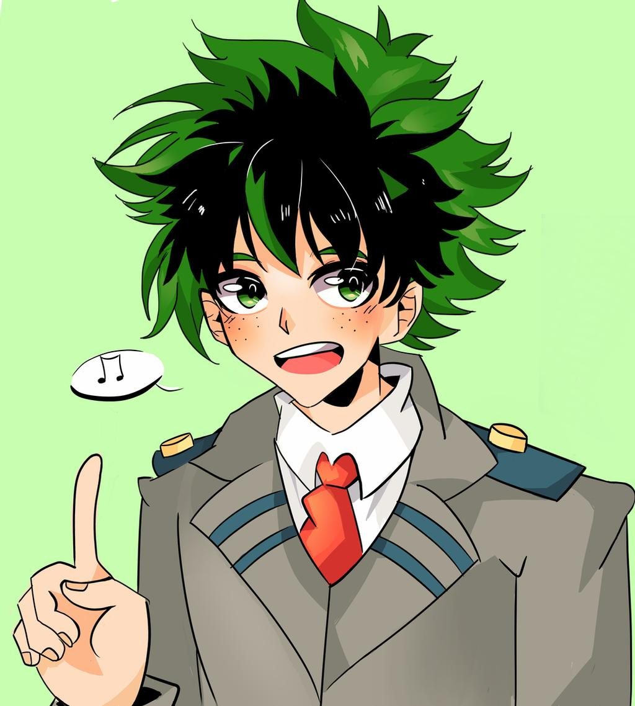

shoto has a sad child hood and is one of my favorite caracthers. his quirk is half hot half cold.he got in the ua by recomandation
izuku was born quirkless but was given a quirk by all migth when he was 14. he was accepted in the ua.
katsuki has an explosion quirk.he looks and acts like an angry pomerainian and to be honest i see no difference. he also atends the ua and was izukus childhood friend before becoming his bully when izuku was quirkless.
kiri has a hardening quirk so he can make himself as hard as a rock 
denki has an electrical quirk. If he exeds his voltege capacidy his brain fries up.
mina has an acid quirk. she also knew kirishima from middle school 
has a frog quirk. she can do anything a frog can. 
her quirk is creation so she can create non living things if she knows the chemical formula.se got in the ua from recomandation.